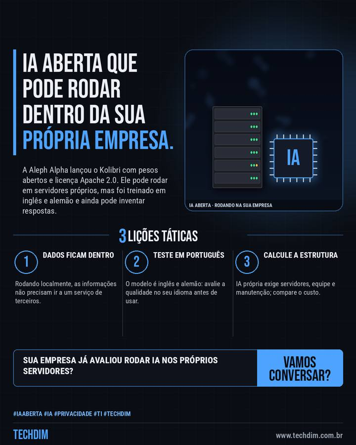

Notícia de tecnologia
Modelo de IA aberto pode rodar dentro da empresa: Aleph Alpha lança o Kolibri
A Aleph Alpha lançou o Kolibri com pesos abertos e licença Apache 2.0. Ele pode rodar em servidores próprios, mas foi treinado em inglês e alemão e ainda pode inventar respostas.

Em resumo
- Em 3/10 a alemã Aleph Alpha lançou o Kolibri, modelo de IA com pesos abertos e licença Apache 2.0: 78 bilhões de parâmetros, cerca de 3 bilhões ativos por vez
- Pode rodar nos servidores da própria empresa, sem enviar dados a terceiros, e aceita contexto de até 1 milhão de tokens (a recomendação padrão é 262.144)
- Foi treinado em inglês e alemão, sem foco em português, e ainda pode inventar respostas: teste a qualidade em português antes de usar com dados reais
IA aberta reduz a dependência de terceiros, mas exige estrutura e testes. A TECHDIM ajuda a avaliar com segurança.
Por que importa
Modelos abertos que rodam internamente interessam a empresas com dados sensíveis; vale avaliar custo e qualidade antes de adotar.
O que fazer na prática
- Dados ficam dentro. Rodando localmente, as informações não precisam ir a um serviço de terceiros.
- Teste em português. O modelo é inglês e alemão: avalie a qualidade no seu idioma antes de usar.
- Calcule a estrutura. IA própria exige servidores, equipe e manutenção; compare o custo.
Fontes consultadas
Mais do Radar de hoje
Leia também
Este texto resume as fontes citadas na data de publicação. Confira sempre o aviso oficial do fabricante antes de agir em produção.